Effective Layout Management
(I wrote this article for the Sun Java Developer Connection website around 1998 and is no longer available. I used the Wayback Machine to retrieve it and post it here)
This module will explore in great detail how the standard Abstract Window Toolkit (AWT) layout managers perform their jobs and how they can be effectively nested to create useful graphical user interfaces (GUIs). Course Outline
- Why do you need Layout Managers?
- What are Layout Managers?
- The Standard AWT Layout Managers
- Setting the Initial Frame Size
- Nesting Layout Managers to Achieve Nirvana
- A Very Common Layout Need
- For More Information...
Why do you need Layout Managers?
To describe why layout managers are necessary, all you need to do is examine a few of the problems they solve. Look at the following screen shots. These describe several GUI sins that are all too common:
Window Expanded, Components Stay Put
The first layout sin is to ignore a user-resize. The most common display size is probably still 640x480, so it's a good idea to make sure your application fits on that size screen. However, some users have much more screen real estate and want to take advantage of it. Non-resizable GUIs can be extremely frustrating. For example, in the initial display of a screen, the name entered is rather long, so it doesn't quite fit in the text field such that all is visible at once:
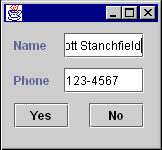
In the hopes of seeing the entire name at once, you could expand the dialog horizontally. Unfortunately, the programmer who wrote this application used absolute positioning and sizing, so the components in the dialog do not expand:
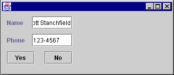
After reporting this behavior, the developer realizes the error that has been committed and changes the GUI to resize properly:
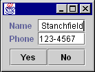
Before resizing

After resizing
Components Designed for a Specific Look-And-Feel or Font Size
Another common problem is expecting all platforms or LookAndFeel libraries
(when using Java Foundation Classes (JFC) Project Swing
technology) to have the same sizing characteristics. The
following picture shows the above GUI under the MotifLookAndFeel of
the JFC Project Swing technology without using a layout manager:
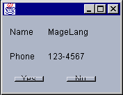
Notice that the MotifLookAndFeel uses
a wider, empty border around the buttons, causing some
undesirable drawing effects. Switching font sizes will have a
similar effect.
Components Designed for a Specific Language
Some words take up the same amount of space in different languages. "No" is a good example, as it's spelled that way in several languages.
However, most words have varying lengths depending on which language you are using. For example:
|
|
A simple button to end an application. The programmer didn't give much thought to translations into other languages... |
|
|
...such as German. Auf Wiedersehen gets chopped to the much smaller Wieder. |
This is unfortunate for two reasons:
- The user doesn't see the entire phrase, but even worse...
- ..."wieder" means again.
What are Layout Managers?
A layout manager encapsulates an algorithm for positioning and sizing of GUI components. Rather than building the layout algorithms into your code and watching for window resizing and other layout-modifying events, the algorithm is kept separate. This allows a layout algorithm to be reused for several applications, while simplifying your application code.
LayoutManager is
an interface in the Java class libraries that describes how a Container and
a layout manager communicate. It describes several methods
which:
- Ask for sizing information for the layout manager and the components it manages.
- Tell the layout manager when components are added and removed from the container.
- Size and position the components it manages.
An additional interface, LayoutManager2,
was added in JDK 1.1, which adds a few more positioning and
validation methods.
The Component class
defines several size accessor methods to assist the layout
process. Each of these methods returns a Dimension object
describing the requested size. These methods are as follows:
-
public Dimension getPreferredSize()
This returns the desired size for a component. -
public Dimension getMinimumSize()
This returns the smallest desired size for a component. -
public Dimension getMaximumSize()
This returns the largest desired size for a component.
Layout managers will use these sizing methods when they are figuring out where to place components and what size they should be. Layout managers can respect or ignore as much or as little of this information as they see fit. Each layout manager has its own algorithm and may or may not use this information when deciding component placement. Which of these methods is respected or ignored is very important information and should be documented carefully when creating your own layout manager.
Controlling the sizes returned for your own components can be accomplished in two ways, depending on whether you are using the JFC Project Swing components.
If your component is a JFC Project Swing component, you inherit
three methods, setPreferredSize(Dimension), setMinimumSize(Dimension) and setMaximumSize(Dimension).
You can call these methods directly to explicitly set the size
information for a component. For example:
JButton okButton = new JButton("Ok");
okButton.setPreferredSize(new Dimension(100,10));
You should only adjust the sizes if you're really sure what you're doing. (The above example is probably not a good idea...)
If your component is not a JFC Project Swing component, you will need to subclass it to adjust the sizes. For example:
public class MyButton extends Button {
public Dimension getPreferredSize() {
return new Dimension(100,10);
}
}
|
Layout Managers and Containers
A layout manager must be associated with a Container object
to perform its work. If a container does not have an associated
layout manager, the container simply places components wherever
specified by using the setBounds(), setLocation() and/or setSize() methods.
If a container has an associated layout manager, the container
asks that layout manager to position and size its components
before they are painted. The layout manager itself does
notperform the painting; it simply decides what size and
position each component should occupy and calls setBounds(), setLocation() and/or setSize() on
each of those components.
A LayoutManager is
associated with a Container by
calling the setLayout(LayoutManager) method
of Container.
For example:
Panel p = new Panel(); p.setLayout(new BorderLayout());
Some containers, such as Panel,
provide a constructor that takes a layout manager as an argument
as well:
Panel p = new Panel(new BorderLayout());
The
add(...) Methods
Containers have several methods that can be used to add components to them. They are:
public Component add(Component comp)
public Component add(String name, Component comp)
public Component add(Component comp, int index)
public void add(Component comp, Object constraints)
public void add(
Component comp, Object constraints, int index)
|
Each of these methods adds a component to the container and
passes information to the layout manager of the container. All
of the methods take a Component parameter,
specifying which component to add. Some take an index. This is
used to specify an order in the container; some layout managers
(such as CardLayout)
respect the ordering of added components.
The other parameters, name and constraints are
information that can be used by a layout manager to help direct
the layout. For example, when adding a component to a container
that is managed by a BorderLayout,
you specify a compass position as a constraint.
Each of the above add() methods
delegates its work to a single addImpl() method:
protected void addImpl( Component comp, Object constraints, int index)
Note: addImpl stands for "implementation of the add method."
This method is the one that does all the work. It adds the Component to
the Container,
and, if a layout manager is managing the container layout, calls
the addLayoutComponent() method
of the layout manager. It is through addLayoutComponent() that
the layout manager receives the constraints (from the add() call).
If you create a subclass of Container and
want to override an add() method,
you only need to override addImpl().
All other add() methods
route through it.
In addition to a layout manager, each Container has
a getInsets() method
that returns an Insets object.
The Insets object
has four public fields: top, bottom, left and right.
These insets define the area a container is reserving for its own use (such as drawing a decorative border). Layout managers must respect this area when positioning and sizing the contained components.
To demonstrate, create a simple Panel subclass
that provides a raised, 3D border around whatever is contained
within it. You'll define this border as being 5 pixels away from
each edge of the container border, and reserving some extra room
between it and the laid out components. The class will look
something like this:
public class BorderPanel extends Panel {
private static final Insets insets =
new Insets(10,10,10,10);
public Insets getInsets() {return insets;}
public void paint(Graphics g) {
Dimension size = getSize();
g.setColor(getBackground());
g.draw3DRect(
5,5,size.width-11, size.height-11, true);
}
}
|
To create the panel, you defined a static Insets object
that represents the space to reserve. Because that space won't
change, you used a single static final instance of it. You'll
return this instance anytime a layout manager (or anyone else)
calls getInsets().
You then define a paint() method
that gets the size of the container into which it is painting,
then draws a raised border within that space. If you use the
above class as follows:
Frame f = new Frame("Test");
f.setLayout(new GridLayout(1,0));
f.setBackground(Color.lightGray);
BorderPanel p = new BorderPanel();
p.setLayout(new GridLayout(1,0));
p.add(new Button("Hello"));
f.add(p);
f.setVisible(true);
f.pack();
|
you'll get the following GUI:

If you are not familiar with GridLayout,
it will be discussed later.
You can get another interesting effect by adding the following
to the paint() method:
g.draw3DRect(6,6,size.width-13,size.height-13,false);
after the first draw3DRect():
or if you swap the true/false on
the two drawRect() calls:

If you are using the JFC Project Swing components, you will want
to explore the various Border classes
provided to generate these types of effects, instead of using Insets.
The Standard AWT Layout Managers
The AWT library includes five layout managers. These can be used in various combinations to create just about any GUI you may possibly want to write. The standard AWT layout managers are:
-
FlowLayout -
BorderLayout -
GridLayout -
CardLayout -
GridBagLayout
Each of these will now be discussed in detail, including
strategies and pitfalls when using them. By themselves, these
layout managers may not seem terribly useful. However, when
combined they become incredibly flexible. FlowLayout
This is the simplest of the AWT layout managers. Its layout strategy is:
- respect the preferred size of all contained components
- lay out as many components as will fit horizontally within a container
- start a new row of components if more components exist
- if all components can't fit, too bad!
To add components to a container managed by FlowLayout,
you could use one of the following add() methods:
public Component add(Component comp) public Component add(Component comp, int index)
You do not specify any constraints for the components, as FlowLayout only depends
on the order of the add() calls
(or the index specified in the call to add(Component,
int).)
Examine a simple FlowLayout in
action. Suppose you had the following class definition:
public class FlowTest {
public static void main(String[] args) {
Frame f = new Frame("FlowTest");
f.setLayout(new FlowLayout());
f.add(new Button("A"));
f.add(new Button("B"));
f.add(new Button("C"));
f.add(new Button("D"));
f.add(new Button("E"));
f.setVisible(true);
}
}
|
This class creates a Frame and
adds five buttons to it. It lays the buttons out as many can fit
per row, then moves to the next row to display more of them. The
following pictures show the frame being expanded horizontally:
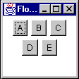
Initial Size

Some horizontal expansion

More horizontal expansion
Notice how the layout is fitting as many components per line as possible. If there isn't room for all the components, they are simply not shown:
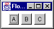
FlowLayout Variations
FlowLayout can
be customized at construction time by passing the constructor an
alignment setting:
-
FlowLayout.CENTER(the default) -
FlowLayout.RIGHT -
FlowLayout.LEFT
These settings adjust how the components in a given row are
positioned. By default, all components in a row will be
separated by an horizontal gap, then the whole chunk will be
centered in the available width. LEFT and RIGHT define
padding such that the row is left or right aligned. The
alignment can also be changed by calling the setAlignment() method
of FlowLayout with
one of the same alignment constants.
FlowLayout can
also be customized with different horizontal and vertical gap
settings. These specify how much space is left between
components, horizontally (hgap) and vertically (vgap)
Preferred
Size of a FlowLayout Container
Recall that when a Container is
asked for its preferred size, it bases that preferred size on
its layout manager. This raises the subject of what FlowLayout would
prefer to do with its components.
Unfortunately, there is no way for a container to know anything about the size of its parent or how its parent's layout manager plans to lay it out. So, the only information available to determine the preferred size of a container is the set of components contained within it.
FlowLayout's preference would be to lay all its
components out into a single
row. This means that its preferred height would be the
maximum height of any of its components plus some "slop" known
as its vgap.
(vgap and hgap are
common properties of most of the standard layout managers, and
specify how far apart components are placed.) The preferred
width would be the sum of all widths of its contained
components, plus an hgap between
each and on either end of the row.
Think about the consequences of this. What would happen if a FlowLayout-managed
container was nested within another FlowLayout-managed
container? For example:
Panel p1 = new Panel(new FlowLayout());
Panel p2 = new Panel(new FlowLayout());
p2.add(new Button("A"));
p2.add(new Button("B"));
p2.add(new Button("C"));
p2.add(new Button("D"));
p2.add(new Button("E"));
p1.add(p2);
|
Think this through a bit and the answer is very disconcerting. The following walks you through the layout process:
- p1's parent container tells it to lay itself out.
- p1 sees that it has a layout manager and delegates the layout task to it.
-
p1's
FlowLayoutchecks the preferred sizes of all its components:- The only component in p1 is p2
-
p2 sees it has a layout manager and delegates the
preferred size request to the layout manager:
-
p2's
FlowLayoutstates that it would prefer to lay out all of its components in a single row. -
p2's
FlowLayoutasks its components (the buttons) for their preferred sizes and calculates the size of that single, preferred row. -
p2's
FlowLayoutreturns that preferred size.
-
p2's
- p2 returns the preferred size.
-
p1's
FlowLayouttries to respect the preferred size of p2 as much as possible.- If there's enough room for the single row, it sets the bounds of p2 to its preferred size.
- If there's not enough horizontal room, it sets p2's bounds to the single-line height and as much width as is available.
- If there's not enough horizontal or vertical room, it sets the bounds of p2 to whatever it has.
So what does this tell us? If a FlowLayout-managed
container is placed within another container whose layout
manager respects its preferred height, the
nested FlowLayout-managed
container will always have a single row.

Before Resizing
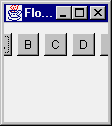
After Resizing
FlowLayout Strategies
and Potential Pitfalls
Keep the following in mind when using a FlowLayout:
-
Never nest a
FlowLayout-managed container within a container whose layout manager respects preferred height.- Caveat: If you only have a few components, this is not as important to avoid.
-
The
FlowLayoutmanager effectively hides components if they won't fit.- There is no visual indication of this to the user—as far as the user is concerned, the unshown components never even existed.
-
Because of the previous point,
FlowLayoutis really only useful when you have a small number of components. -
FlowLayoutis horizontally biased. If you want a vertical flow layout, you must write your own. (Or use theBoxLayoutmanager which comes with the JFC Project Swing component set.TheBoxLayoutmanager is discussed in the Fundamentals of Swing: Part I tutorial.)
BorderLayout
BorderLayout is
probably the most useful of the standard layout managers. It
defines a layout scheme that maps its container into five
logical sections:
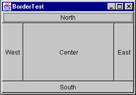
The first thing going through your mind should be "but I will never have a GUI that looks like that!" Moreover, you are probably correct. However, the secret is in mastering its nesting capabilities, and using two or three of the logical sections. (It's very rare that you'll actually use more than three of the positions in a container at once.)
First, look at the sample code for the above GUI:
Frame f = new Frame("orderTest");
f.setLayout(new BorderLayout());
f.add(new Button("North"), BorderLayout.NORTH);
f.add(new Button("South"), BorderLayout.SOUTH);
f.add(new Button("East"), BorderLayout.EAST);
f.add(new Button("West"), BorderLayout.WEST);
f.add(new Button("Center"), BorderLayout.CENTER);
|
The BorderLayout manager
requires a constraint when adding a component. The constraint
can be one of the following:
-
BorderLayout.NORTH -
BorderLayout.SOUTH -
BorderLayout.EAST -
BorderLayout.WEST -
BorderLayout.CENTER
These constraints are specified within the following two add() methods:
-
public void add(String constraint, Component component)
This is the "old" form of adding a constraint. JDK 1.0.2 only provided for constraints that were represented by aStringto be added when adding aComponentto aContainer -
public void add(Component component, Object constraint)
This is the "new" form of adding a constraint, added in JDK 1.1.
You'll see a few more variations of the add() method
when you examine CardLayout later.
Concentrate on just these forms for now.
For BorderLayout,
the constraint argument describes which position the component
will occupy. Note that the earlier BorderLayout example
source code could have been written as follows:
Frame f = new Frame("BorderTest");
f.setLayout(new BorderLayout());
f.add("North", new Button("North"));
f.add("South", new Button("South"));
f.add("East", new Button("East"));
f.add("West", new Button("West"));
f.add("Center", new Button("Center"));
|
The big difference is that the newer form (using the BorderLayout.NORTH type
constraints) can be compile-time checked; if you type BorderLayout.NORFH the
compiler will catch it. If you just type "Norfh", it will not be
caught until runtime, causing an IllegalArgumentException to
be thrown.
The Java 2 platform (previously known as the JDK 1.2) adds
additional constants of BEFORE_FIRST_LINE, AFTER_LAST_LINE, BEFORE_LINE_BEGINS,
and AFTER_LINE_ENDS.
These are effectively equivalent to NORTH, SOUTH, WEST,
and EAST,
respectively. However, they could have other orientations where
text is not oriented left-to-right, top-to-bottom. Examine thejava.awt.ComponentOrientation class
for additional information on language-sensitive orientation
issues.
BorderLayout respects some of
the preferred sizes of its contained components, but
not all. Its layout strategy is:
-
If there is a
NORTHcomponent, get its preferred size.
Respect its preferred height if possible, and set its width to the full available width of the container. -
If there is a
SOUTHcomponent, get its preferred size.
Respect its preferred height if possible, and set its width to the full available width of the container. -
If there is an
EASTcomponent, get its preferred size.
Respect its preferred width if possible, and set its height to the remaining height of the container. -
If there is an
WESTcomponent, get its preferred size.
Respect its preferred width if possible, and set its height to the remaining height of the container. -
If there is a
CENTERcomponent, give it whatever space remains, if any.
Now consider nesting a FlowLayout-managed
container inside a BorderLayout-managed
container. First, what would happen if you added the FlowLayout-managed
container as theNORTH or SOUTH component
of the BorderLayout?
Panel flow = new Panel(new FlowLayout());
Panel border = new Panel(new BorderLayout());
flow.add(new Button("A"));
flow.add(new Button("B"));
flow.add(new Button("C"));
flow.add(new Button("D"));
flow.add(new Button("E"));
border.add(flow, BorderLayout.NORTH);
|
Remember what happens when a FlowLayout-managed
container is added to a layout that respects preferred height? The FlowLayout container
will only ever have a single row! It will never flow its
components to more than that one row.
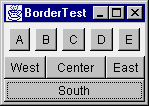
That was the easy one (now that you know the secret). Now, what
if you add the FlowLayout-managed
container as the WEST or EAST component?
To demonstrate, place the container in theEAST section:

This initial display looks pretty much as you would expect. Each component is taking up its preferred size.
Next, reduce the width and increase the height. The FlowLayout container
is still insisting on a single row for its preferred width (as
you should expect) and is eating up room that the CENTERcomponent
would have liked to use. This result can be very unexpected, as
you might think the FlowLayout container
should expand to fill the EAST area
and give some room back to theCENTER component:
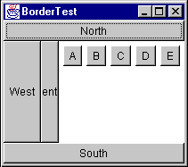
Remember: a BorderLayout container
asks for the preferred size of each section and respects it as
much as possible.
To demonstrate this even further, reduce the width until only
the EAST component
is still visible:

Finally, if you compress it more, the FlowLayout-managed
container is clipped to the available space:

So, the only place that you should really put a FlowLayout managed
container within a BorderLayout-managed
container is the CENTER section
(unless you only have very few components in the FlowLayout).
Now consider some nice generalizations about BorderLayout:
-
NORTH and
SOUTHpositions in aBorderLayoutcan be useful if you want to bind the height of part of a GUI to that part's preferred height. -
EAST and
WESTpositions in aBorderLayoutcan be useful if you want to bind the width of part of a GUI to that part's preferred width. -
Once part of the GUI is bound, the
CENTERis the expanding part.
These are very important properties of BorderLayout,
and make it very powerful when used to create a more complex,
nested GUI.
Take a very simple example. Suppose you wanted to create a simple labeled text field. You want this new component to exhibit the following properties:
- The label takes up exactly as much horizontal room as needed
- The label is to the left of the text field
- The text field expands horizontally
You could start with the following code:
Panel p = new Panel(new BorderLayout());
Label nameLabel = new Label("Name:");
TextField entry = new TextField();
p.add(nameLabel, BorderLayout.WEST);
p.add(entry, BorderLayout.CENTER);
|
Here you are binding the width of the label to its preferred width. It will take up that much space and not expand. The entry field is not bound and can expand. So, you achieve the desired result:

Initial size

After horizontal stretch
At least it seems you achieved the desired result. Look what happens when you expand vertically:
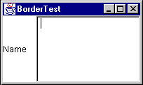
The TextField is
stretched. So, you need to bind the height of the two components
to their preferred height. This can be accomplished by placing
the Label/TextField combination
insideanother BorderLayout-managed
container, as the NORTH or SOUTH component.
Assuming that you want the fields to stay at the top of the GUI,
you can place it to the NORTH:
Panel p = new Panel(new BorderLayout());
Label nameLabel = new Label("Name:");
TextField entry = new TextField();
p.add(nameLabel, BorderLayout.WEST);
p.add(entry, BorderLayout.CENTER);
Panel p2 = new Panel(new BorderLayout());
p2.add(p, BorderLayout.NORTH);
|
Now, when you expand vertically, you get the following effect:

BorderLayout Variations
BorderLayout can
be customized with hgap and vgap values at construction time.
These values specify how much space is left between components,
horizontally (hgap) and vertically (vgap).
Preferred
Size of a BorderLayout Container
If a BorderLayout-controlled
Container is asked for its preferred size, what will it return?
The idea behind its preferred size is to make sure all contained
components are given their preferred sizes. First, look at the
preferred width:
Looking at the above picture, there are three rows of components:
- NORTH
-
WEST,
CENTERandEAST(plus hgaps as needed) - SOUTH
The preferred width of the layout needs to take into account the
widest of these rows. Using pw as the abbreviation for
"preferred width", you can write a simple equation for the
preferred width of a BorderLayout:
pw = max(north.pw, south.pw,
(west.pw + center.pw + east.pw + hgaps))
The hgaps amount to include depends on which components are present in the center row.
The preferred height (ph in
the following equation) depends on the sizes of the NORTH and SOUTH components
plus the tallest of
the middle-row components:
ph = vgaps + north.ph + south.ph +
max(west.ph, center.ph, east.ph)
The vgaps amount
depends on which rows are present in the BorderLayout.
A useful application of this preferred-size knowledge is
creating two or three rows of components that each keep their
preferred size. Suppose you had a Label,
a TextArea,
and aTextField that
you wanted to lay out like this:
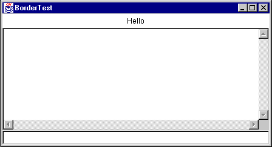
And when you expand it vertically, you do not want the components to stretch vertically:
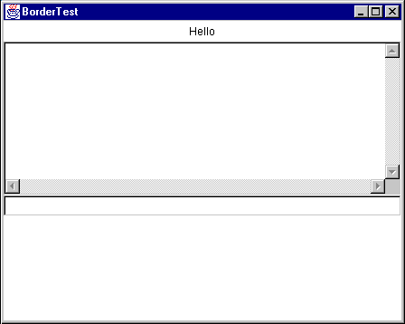
First, recall that you can bind the
height of a component to its preferred height by placing it in
the NORTH or SOUTH part
of a BorderLayout.
If that bound component happens to be anotherBorderLayout,
(with NORTH, CENTER,
and SOUTH components)
each component within that layout would get its preferred
height. This results in the above figure, with code to produce
it:
Frame f = new Frame("BorderTest");
Panel p = new Panel(new BorderLayout());
f.setLayout(new BorderLayout());
p.add(new Label("Hello", Label.CENTER),
BorderLayout.NORTH);
p.add(new TextArea(), BorderLayout.CENTER);
p.add(new TextField(), BorderLayout.SOUTH);
f.add(p, BorderLayout.NORTH);
|
An effective combination of a FlowLayout and
a BorderLayout is
for the common "Ok" and "Cancel" buttons on a dialog. For
example:

The above is accomplished with the following code:
Frame f = new Frame("BorderTest");
Panel p = new Panel(new FlowLayout(FlowLayout.RIGHT));
f.setLayout(new BorderLayout());
p.add(new Button("Ok"));
p.add(new Button("Cancel"));
f.add(p, BorderLayout.SOUTH);
|
There is one problem with this approach: the widths of the two buttons are different. You'll see a better way to create this type of GUI in a moment.
GridLayout
GridLayout lays
out its components in a grid. Each component is given the same
size and is positioned left-to-right, top-to-bottom.
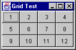
The code that produced the above GUI looks like:
Frame f = new Frame("Grid Test");
f.setLayout(new GridLayout(3,4));
for (int x = 1; x < 13; x++)
f.add(new Button("""+x));
When specifying a GridLayout,
there are two main parameters: rows and columns.
You can specify both of these parameters, but
only one will ever be used. Take
a look at the following code snippet from GridLayout.java:
if (nrows > 0) {
ncols = (ncomponents + nrows - 1) / nrows;
else
nrows = (ncomponents + ncols - 1) / ncols;
Notice that if rows is non-zero, it calculates the number of columns; if rows is zero, it calculates the number of rows based on the specified number of columns.
To the casual observer, a statement like
f.setLayout(new GridLayout(3,4));
looks like it will always divide the screen into twelve sections, but that's not the case. In the above statement, you could substitute any value for the number of columns, and the effect would be exactly the same.
A better way to specify the rows and columns of
a GridLayout is
to always set
one of them to zero. A zero value for rows of columns means
"any number of".
Note: A word of caution: you cannot specify zero for both;
an IllegalArgumentException will
be thrown.
Specifying zero for one value makes the design intent obvious. If you always want four rows, say so; if you always want three columns, say so. The above example should be written as either
f.setLayout(new GridLayout(3,0));
or
f.setLayout(new GridLayout(0,4));
Preferred Size of a
GridLayout Container
How do you determine the preferred size of a GridLayout? GridLayout wants
to accommodate the preferred size of all its
contained components if possible. To do this, it looks at all
the preferred sizes and determines the maximum preferred width
and the maximum preferred height. One
thing to keep in mind, the maximum preferred height and maximum
preferred width do
not necessarily
come from the same component!
The GridLayout would
like to set the size of each component
to that maximum preferred width and maximum preferred height.
(Remember—all components in a GridLayout will
be the same size!) This makes the preferred size of a GridLayout
pw = (maxPrefWidth * cols) + (hgap * (cols+1)) ph = (maxPrefHeight * rows) + (vgap * (rows+1))
"Ok" and "Cancel" Revisited
One of the goals of the earlier "Ok" and "Cancel" dialog was to
make the buttons the same size. This can be accomplished by
putting the buttons in a single-row GridLayout.
You can then add that GridLayout container
to the FlowLayout,
or use a nested BorderLayout in
place of the FlowLayout.
Here are both approaches:

Frame f = new Frame("Ok/Cancel");
f.setLayout(new BorderLayout());
Panel p = new Panel();
p.setLayout(new FlowLayout(FlowLayout.RIGHT));
Panel p2 = new Panel()
p2.setLayout(new GridLayout(1,0,5,5));
p2.add(new Button("Ok"));
p2.add(new Button("Cancel"));
p.add(p2, BorderLayout.EAST);
f.add(p, BorderLayout.SOUTH);
|
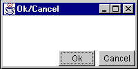
Frame f = new Frame("Ok/Cancel");
f.setLayout(new BorderLayout());
Panel p = new Panel();
p.setLayout(new BorderLayout());
Panel p2 = new Panel()
p2.setLayout(new GridLayout(1,0,5,5));
p2.add(new Button("Ok"));
p2.add(new Button("Cancel"));
p.add(p2, BorderLayout.EAST);
f.add(p, BorderLayout.SOUTH);
|
Notice the difference in appearance. The FlowLayout pads around the
components with the hgap and vgap, while BorderLayout only
pads between components
(so the components butt right against the edges of the
container.)
In both cases, the buttons now appear the same size. The nesting for this layout can be more easily seen in the following picture:

And similarly for the second version of the layout, using the
nested BorderLayout.
CardLayout
CardLayout uses
a different strategy than the other layout managers. Instead of
assigning locations in the container for all nested components,
it only displays one component at a time. Components can be
added to a CardLayout using
the following add methods:
public void add(Component component, String key);
public void add(String key, Component component);
public void add(
String key, Component component, int index);
The first two forms of the add() method
will add the component at the end of the list of components for
the container. The last form of the add() method
will add the component at the specified position in the
container. The position of the component within the container
determines the order in which the components will be displayed
via the manipulation methods ofCardLayout.
A unique String key
must be assigned for each component that is added to the
container. For example:
Panel p = new Panel(new CardLayout());
p.add("one", new Button ("the first component"));
p.add(new Button ("the second component"), "two");
p.add("three", new Button ("the third component"));
p.add("between two and three", new Button (
"the fourth component"), 2);
|
When components are added to container that is controlled by a CardLayout,
a String key
is associated with each component. Different components can be
displayed by using the next(),previous,
and show methods
of CardLayout.
The order in which components are added to the container
determines their display order when using the next() and previous methods.
For example:
CardLayout l = (CardLayout)p.getLayout(); l.previous(p); l.next(p); l.show(p, "two");
Notice that the previous(), next(),
and show() methods
require a reference to the container be passed into them has an
argument. Layout managers do not keep a reference to the
container that uses them. When performing actions such as
calling previous(), next(),
and show(),
and, as you will see later, the laying out of the actual
components, the layout manager needs to be informed of the
container on which it is operating so it can have access to the
components it is laying out.
CardLayout is
commonly used in GUIs that want to organize their data into
several smaller screens, rather than having all components on
one larger screen. This is typically used in combination with
several buttons for switching components within the CardLayout,
or a tabbed panel component.
Preferred
Size of a CardLayout Container
So how do you determine the preferred size of a CardLayout?
Keeping in mind that the preferred size wants to take into
account the preferred size of all contained components in the
container, the preferred size of the CardLayout will
be the maximum preferred width of all contained components and
the maximum preferred height of all contained components
GridBagLayout tends
to be one of the most difficult layout managers to understand.
There are several reasons for this widely held opinion:
- It is very complex and can be difficult to learn.
- If you learn it and use it in your GUI, the poor maintenance programmer will have to learn it just as well as you did.
-
There are a few bugs in
GridBagLayoutthat evidence themselves after components are added to or removed from theGridBagLayoutafter theGridBagLayouthas been displayed
Note:GridBagLayoutmaintains some internal state that sometimes gets confused when components are added and removed.
Covering all of the details of using GridBagLayout could
span an entire book. It will be covered briefly in the context
of an example in a later section.
Without a GUI builder like VisualAge for Java or JBuilder, you
should avoid GridBagLayout if
at all possible. For most GUIs, you can achieve the same results
by nesting the other, simpler layout managers.
Setting the Initial Frame Size
The Frame class
provides a pack() method
that helps set an "ideal" initial size. The pack() method
calls the getPreferredSize() method
of Frame to
determine what size it would like to be laid out, and, if the
screen is large enough to allow it, sets the Frame to that size.
If there isn't enough screen space, the Frame will be limited to
the available screen space.
Nesting Layout Managers to Achieve Nirvana
The following sections describe a real-life user interface and how it might be created with the help of Java layout managers.
A great example of nesting the standard layout managers is WS_FTP, a Windows program for graphical FTP support.
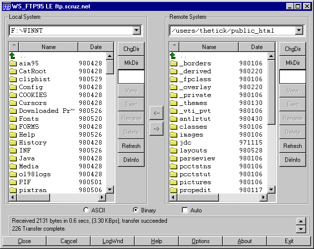
This GUI, while it may seem nice for "power users" is overly complex. The buttons at the bottom should really be menu items and the buttons to the right of each file list should be popup menus on the file lists. Nevertheless, the GUI as it stands makes a great example for nesting the basic layout managers.
Before writing any GUI code, you should always do two things:
- Draw a picture! You would be surprised how many people try to visualize the GUI in their head. Drawing a picture makes the design significantly easier to develop.
- Describe the resize behavior. After drawing the picture, add information about which parts of the GUI will expand/collapse when the window is resized.
In the above example, ignore the border lines around components.
These can be added after the GUI is constructed, either by
applying the Decorator Pattern or, if using JFC Project Swing
containers, by calling setBorder().
Start with a picture describing what you want the GUI to look like. Simplify things a bit by removing the decorative borders and assume the existence of a "File List" component (probably a table with a header).
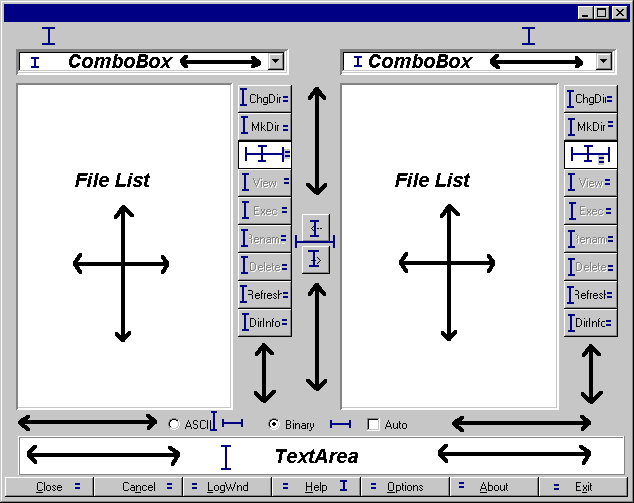
The arrows indicate which parts of the GUI will expand/collapse when the GUI is resized.
The above diagram is marked with the resize behavior of the GUI. The key explains which lines refer to fixed and varying sizing behaviors. When part of a component has a fixed size (horizontal, vertical, or both) it will not expand or contract as the window is resized. The equal signs (=) refer to adjoining components that have the same size.
A few notes on the GUI's behavior:
- The two large sections that contain the File Lists should occupy the same amount of space.
- The two arrow buttons in the middle should be vertically centered between the file list sections.
- The ChgDir, MkDir, and other buttons all are the same size and are fixed at the group's preferred width and do not expand vertically. (The space below them expands when the window is stretched vertically.)
- The buttons at the bottom of the GUI are all the same size and will expand/collapse horizontally with the GUI's width.
- The ASCII, Binary and Auto checkboxes stay a fixed amount apart, floating as a group horizontally centered.
Now, the fun begins. You need to examine the GUI and try to visualize layout managers being used to represent sections of it. When trying to design the GUI, work from the outside edges inward. Always start by looking for "borders"; a component, or group of components that border an edge with a fixed width or height.
Looking at the above GUI, you can visualize it as a BorderLayout with
two components: a SOUTH,
and a CENTER:
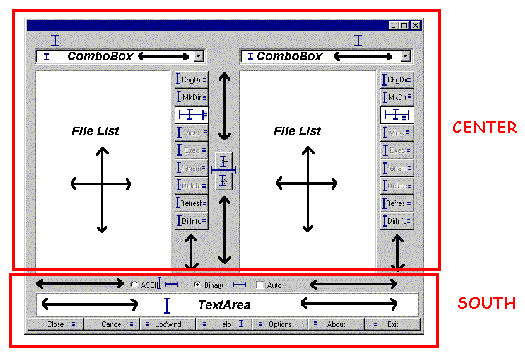
The SOUTH part
of the BorderLayout has
a fixed height, based on the preferred size of its components.
The CENTER part
will expand to fill the remaining room in the GUI. Examining theSOUTH section
closer, you can view it as three parts:

Note that there are three components here, stacked vertically,
each with their preferred height. You might be tempted to stick
this in a GridLayout,
but that would force them all to take up the same amount of
space vertically. That's not what you want.
Suppose you put these three components as NORTH, CENTER,
and SOUTH of
a BorderLayout.
This new BorderLayout panel
is nested as the SOUTH component
of the overallBorderLayout.
Think through what happens when this part of the GUI is laid
out:
-
The overall
BorderLayoutasks itsSOUTHcomponent for its preferred size-
The
SOUTHcomponent, being aBorderLayoutitself, asks its components for their preferred sizes -
The nested
BorderLayoutreturns a size that is- Width = max preferred width of those three components.
- Height = sum of the preferred heights of those three components.
-
The
-
The overall
BorderLayoutassigns the size of itsSOUTHcomponent to the frame's width, and the preferred height of thatSOUTHcomponent. TheCENTERcomponent gets all remaining room. -
The
SOUTHcomponent now gets its chance to lay out its contained components.-
The
SOUTHcomponent asks for the preferred sizes of its children. -
The
SOUTHcomponent assigns the width of all components to the width it has been given. -
It grants its
NORTHcomponent its preferred height. -
It grants its
SOUTHcomponent its preferred height. -
It grants its
CENTERcomponent the remaining space.
-
The
Note that last bullet. The CENTER gets
the remaining space. Because the overall BorderLayout had
granted the SOUTH component
its preferred height, and the
preferred height was equal to the sum of the preferred heights
of the contained components, that nested CENTER component
(the message TextArea)
just happens to get its preferred height.
First, define the NORTH part
of this sub-GUI. It has three components, equally spaced, with
all of them centered across the width of the Panel.
Sounds like a FlowLayout,
eh? So, it is a Panelwith
a FlowLayout containing
three CheckBox components.
Notice that the first two CheckBox components
must be associated with a CheckboxGroup so
they will become radio buttons.
Now you must create the SOUTH part
of this sub-GUI. It has seven Button components,
all equally sized. The phrase "equally-sized" should immediately
trigger GridLayout in
your mind. So, the SOUTH part
of the sub-GUI is a Panel with
a GridLayout containing
seven Button component.
This GridLayout consists
of a single row, so use parameters of (1,0) to its constructor.
The CENTER part
is just a single component, a TextArea.
You do not need to nest this inside another Panel;
components can be directly added to containers... You'll set
this TextArea's
number of rows to 3 and columns to 30. These numbers drive the preferred
size of the TextArea;
they have no effect on the TextArea once
it has been sized by the layout manager. You must specify these
because its placement in the layout asks for its preferred size,
and it would return a larger number of rows than three if asked.
The 30 will only come in handy if you pack()the Frame,
where it will help contribute to the calculated width of the
frame. One final note on this TextArea:
if you place it in a BorderPanel as
previously discussed in the Insets section
above, you can give it a raised, lowered, or etched border.
To sum up what the layout looks like so far:
-
Ftpextends Frame, layout=BorderLayout-
SOUTH=
Panel, layout=BorderLayout-
NORTH=Panel, layout=
FlowLayout-
Checkbox("ASCII") w/CheckboxGroup -
Checkbox("Binary"), w/CheckboxGroup -
Checkbox("Auto")
-
-
CENTER=
TextArea(3,30) -
SOUTH=
Panel, layout=GridLayout(1,0)-
Button("Close") -
Button("Cancel") -
Button("LogWnd") -
Button("Help") -
Button("Options") -
Button("About") -
Button("Exit")
-
-
NORTH=Panel, layout=
- CENTER=? (that's next...)
-
SOUTH=
Now you need to address the CENTER part
of that overall BorderLayout.
First, take a look at the following picture of the center
section:

Notice anything interesting? It has to do with those two boxes drawn around the left and right side components. They are structurally the same. Exactly the same. When two things are the same, and it's a chore to build it each time, you should think reuse.
Extract out one of those chunks and look at it separately. Put
it in its own class called FileDisplay.
Start examining this sub-GUI by looking for bordering
components. You can immediately see three:

The NORTH part
consists of a Label and
combo box (you'll use an AWT Choice component
for now), vertically stacked. The CENTER is
a List component.
The EAST is
a bunch of Buttons
vertically stacked.
Looking first at the NORTH part,
you need to have the Label and Choice take
up their preferred height and the full width. Since this is the NORTH component,
whatever they are contained in will receive its preferred
height. By placing the Label and Choice as NORTH and SOUTH (or NORTH and CENTER,
or CENTER and SOUTH)
of a BorderLayout,
they will receive their preferred height. Again, a GridLayout would
be a bad choice because that assumes that both components want
the same height. You could change the font size on the Label to
make it larger, and you wouldn't want that to affect the size of
the Choice.
The CENTER part
is simple: just a List component.
Not contained inside any Panel (unless
you had a Panel subclass
that provided a decorative border, such as the
previously-discussedBorderPanel).
Now for the EAST part,
which is a bit trickier. You want all the Button components
the same size (your mind should immediately think GridLayout)
but that size should be their preferred height and preferred
width. Any space below the buttons expands and collapses.
Because you've placed the entire strip of Buttons
as an EAST component
of a BorderLayout,
their width is fixed on the preferred width of the container
that encloses those buttons. To fix their height on their
preferred height, you can place the strip inside
another BorderLayout,
as the NORTH component!
So EAST is
a Panel with
a BorderLayout containing
another Panel as
its NORTH component,
and that NORTH Panel has
a GridLayout controlling
its buttons. The GridLayout is
a single column of buttons, so its constructor parameters are
(0,1).
Now for a look at the structure of the FileDisplay:
-
FileDisplayextendsPanel, layout=BorderLayout-
NORTH=
Panel, layout=BorderLayout-
NORTH=
Label("") -
SOUTH=
Choice
-
NORTH=
-
CENTER=
List -
EAST=
Panel, layout=BorderLayout-
NORTH=
Panel,layout=GridLayout(0,1)-
Button("ChgDir") -
Button("MkDir") -
TextField("*.*") -
Button("View") -
Button("Exec") -
Button("Rename") -
Button("Delete") -
Button("Refresh") -
Button("DirInfo")
-
-
NORTH=
-
NORTH=
To make this work properly, you must have FileDisplay "promote"
the text property of its Label as
a property of its own. Provide a get() and set() method
for that property that simply gets and sets the text property of
the Label.
You'll see this when the code is reviewed later.
All that remains now is the CENTER section
of the main GUI.
Examine what the CENTER section
looks like without the details that you captured in FileDisplay:

The two ovals represent the two instance of FileDisplay.
The behavior of this part of the GUI is really up to four
components: two FileDisplay components,
which should take up equal amounts of space, and two Button components,
each with its preferred size, floating casually in between them.
For purposes of aesthetics, assume that the buttons should be centered vertically.
This is a tricky layout situation. Among the standard layout
managers, there is really only one choice: the GridBagLayout.
Examine how difficult this can be for a simple case like this.
First, you need to determine where the grid cells are. You do
this as is always necessary to do with GridBagLayout—draw
lines between each pair of adjoining components all the way
across the GUI:

You can see that this GridBagLayout will
have six cells and four (numbered) components. Each cell
requires the configuration of a GridBagConstraints object,
to be passed along as the constraints in the add(Component
component, Object constraints) version
of the add() method.
You now need to walk through the GridBagConstraints options
and determine what they should be.
First, the easy ones, gridx, gridy, gridwidth, gridheight, ipadx, and ipady. You'll use insets rather than padding, so it makes the ipadx and ipady settings zero for all components:
| 1 | 2 | 3 | 4 | |
|---|---|---|---|---|
|
gridx |
0 | 2 | 1 | 1 |
|
gridy |
0 | 0 | 0 | 1 |
|
gridwidth |
1 | 1 | 1 | 1 |
|
gridheight |
2 | 2 | 1 | 1 |
|
ipadx |
0 | 0 | 0 | 0 |
|
ipady |
0 | 0 | 0 | 0 |
Next you need to understand fill. Recall that this tells how the components will expand within their allotted cells. For components 1 and 2, this will be BOTH; you want components 3 and 4 to be their preferred size, so fill will be NONE.
Next, anchor. Because components 1 and 2 completely fill their
allotted space, their anchor could be any value. Usually you use
the default of CENTER.
Component 3 sits at the bottom/center of its cell—that's the SOUTH anchor
position. Component 4 sits at the top/center of its cell—that's
the NORTH,
anchor position.
The insets define the space to leave around components. There's no space around components 1 and 2, so their insets are all 0. You want some space around components 3 and 4. How about four pixels between them and any adjoining components. You can do this in several ways to put 4 pixels between components 3 and 4—give them 2 as their bottom and top insets.
Now the tricky part of this GridBagLayout:
the weights. Think about the constraints rules you want:
- The cells of components 1 and 2 expand horizontally, equally
- The cells of components 3 and 4 do not expand horizontally
- The cells of components 1 and 2 expand vertically to fill the entire space equally
- The cells of components 3 and 4 expand vertically, each filling half the space
By rule #1, the weightx settings of components 1 and 2 must be equal. By rule #2, the weightx settings of components 3 and 4 must be 0. These are the only rules relating to horizontal space, so you can pick any weights you want for components 1 and 2, as long as they are the same. The weights are floating point numbers, and a nice convention to follow is to normalize the total weights to 1.0, giving each component 1 and 2 a weightx of 0.5.
By rule #3, the weighty settings of components 1 and 2 must be equal, and should be the total weighty of the container. By rule #4, the weighty settings of components 3 and 4 must be equal and be half of the total weighty. This gives the following results:
| 1 | 2 | 3 | 4 | ||
|---|---|---|---|---|---|
|
gridx |
0 | 2 | 1 | 1 | |
|
gridy |
0 | 0 | 0 | 1 | |
|
gridwidth |
1 | 1 | 1 | 1 | |
|
gridheight |
2 | 2 | 1 | 1 | |
|
ipadx |
0 | 0 | 0 | 0 | |
|
ipady |
0 | 0 | 0 | 0 | |
|
fill |
BOTH | BOTH | NONE | NONE | |
|
anchor |
CENTER | CENTER | SOUTH | NORTH | |
|
weightx |
0.5 | 0.5 | 0.0 | 0.0 | |
|
weighty |
1.0 | 1.0 | 0.5 | 0.5 | |
|
insets |
top | 0 | 0 | 0 | 2 |
| bottom | 0 | 0 | 2 | 0 | |
| left | 0 | 0 | 4 | 4 | |
| right | 0 | 0 | 4 | 4 | |
Setting these GridBagConstraints finishes
the GUI design. Writing code for this GUI produces:

Which, decorations aside, looks just like you wanted it to!
A note on that last GridBagLayout:
sometimes the initial thought regarding components 3 and 4 is to
have weightx and weighty be zero for both components. This would
produce the following result:
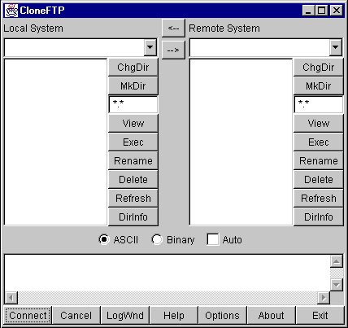
Notice where the "<--" and "-->" buttons are. The weightx and
weighty values control the sizing of the grid
cells that a
component will occupy. If the sum of the weights for a given row
or column in a GridBagLayout does
not equal that of the other rows or columns, GridBagLayout makes
up the difference by setting the weight of the last component
in that row or column. In this case, you have three columns: two
are the FileDisplay components,
and the third is the column with the two buttons in it. Because
the weighty values of the two buttons don't add to the same
weighty values of the other two columns, GridBagLayout gives
the lower button's grid cell the entire remaining height.
Looking at Some Code for this GUI
There are two common approaches to writing GUI code by hand. One involves building sub-GUIs via method calls, the other involves simply putting all the code in one-big blob.
The following example code for this GUI follows the first pattern:
This code was generated using IBM's VisualAge for Java, and simplified by removing the exception handling and "ivj" prefixes on all the variable names. The code follows a "lazy instantiation" strategy: no GUI components or sub-GUIs are created until needed. This has several advantages:
- If a GUI in your application isn't used, it's never created, making the program more efficient.
- You never need to worry if you've already created part of a GUI or not; you simply call the method in question to access that part of the GUI.
- The GUI structure is directly reflected in the code. Nested GUI elements are calls made to other methods.
Of course, there are a few disadvantages as well:
- More code to write
- Slightly slower performance due to extra method calls (although this is minimal compared to other performance issues)
Another alternative is to use a GUI builder tool to create the interfaces. This can be a very attractive option, especially if your GUI is very complex.
Taking this same example and writing it blob-style can result in the following code:
The advantage here is less code, although it can be difficult to see the GUI structure in the code. It can also be very difficult to properly order the creation/addition of GUI objects—you must be very careful to create everything you need before you use it.
A common GUI need is to create some sort of input form. The following is a simple example:

Note that in this GUI all of the labels line up horizontally, as do the text fields. When this GUI is expanded horizontally, the text fields should stretch but the labels should not.
One of the things to be mindful of when designing this GUI is what happens when the window is expanded vertically. Text fields tend not to look too good when expanded vertically. You probably want everything to keep its preferred height.

Keeping the labels and text fields at their preferred height

Allowing the labels and text fields to stretch
So, how do you design this GUI?
First, you need to think about how to bind the labels and text
fields to their preferred height. This can be accomplished by
placing all of the components as the NORTH component
of aBorderLayout.
Next, you need to divide the GUI into two evenly spaced parts:
the left half the right half. You should think "GridLayout"
whenever you hear the phrase "equally spaced". This GridLayoutconsists
of a single row; its parameters to its constructor would be
(1,0). (In the above example, you are also setting hgap to
five.)
Now what do you do about the pairs of text fields and labels?
Your initial answer might involve placing each pair of text
fields and labels into their own BorderLayout.
For example:
Panel panel1 = new Panel(new BorderLayout());
panel1.add(
new Label("First name:"), BorderLayout.WEST);
panel1.add(new TextField(), BorderLayout.CENTER);
Using this strategy for each pair of labels and text fields, and adding each of those into their proper place in the GUI, you get a slightly undesirable affect:
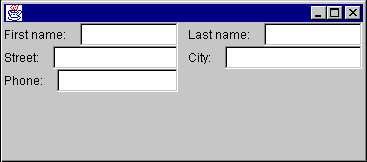
So what happened? Think about what BorderLayout does.
It says "look at my WEST component.
Give it its preferred width. Then, give the CENTER component
the remaining available space." Note that it doesn't say "look
at the component below me. Make sure my WEST component
matches the same size as his WEST component."
You need to somehow associate the labels with one other, and the
text fields with one another.
The only way you can do this is to put all the labels that go together in the same container. Similar for the text fields. However, you also need to make sure the text fields and labels line up.
If you can make sure that the container that holds the labels
takes up the same vertical space as the container that holds the
text fields, you can use a GridLayout to
divide each of those spaces evenly. But wait; you have already
decided to put all of the labels and text fields in the NORTH component
of the overall BorderLayout.
This fixes the height of that set of components to its preferred
height.
So, you start off with the overall BorderLayout.
You add a Panel as the NORTH component
of the BorderLayout.
This NORTH Panel
contains all the other components, and uses a single-rowGridLayout.
Within that GridLayout,
you add two Panels for the left and right halves of the GUI.
Each of these panels will contain two components: a Panel that
contains the labels, and a Panel that contains the text fields.
Because you want the text fields to expand horizontally, and the
labels to keep a fixed width, you want to use a BorderLayout.
The final GUI will be structured as follows:
-
Frame, layout=
BorderLayout-
NORTH=Panel, layout=
GridLayout(1,0)-
Panel, layout=
BorderLayout-
WEST=Panel, layout=
GridLayout(3,0)- Label("First name:")
- Label("Street:")
- Label("Phone:")
-
CENTER=Panel, layout=
GridLayout(3,0)- TextField
- TextField
- TextField
-
WEST=Panel, layout=
-
Panel, layout=
BorderLayout-
WEST=Panel, layout=
GridLayout(3,0)- Label("Last name:")
- Label("City:")
-
CENTER=Panel, layout=
GridLayout(3,0)- TextField
- TextField
-
WEST=Panel, layout=
-
Panel, layout=
-
NORTH=Panel, layout=
One thing to notice here is the parameters passed to the most
deeply nested GridLayout containers.
Your first thought when setting up these GridLayout containers
should be "there is one column of components". The problem is,
the first set of GridLayout containers
have three components each; the second set has two components
each. If you set a GridLayoutconstructor
parameters to (0, 1), the GUI would look as follows:

Notice the second set of labels and text fields is evenly spaced into two chunks. What you wanted was to have all the text fields and all the labels take up the same amount of vertical space (which means that there will be a blank spot at the bottom of the rightmost set of labels and text fields).
Copyright © 1996-2013, Scott Stanchfield. All Rights Reserved.
Contact me at scott@javadude.com
JavaDude.com Home
Rounded-corner figures based on "More Snazzy Borders" by
Stu Nicholls
 Want
to hear about new stuff at JavaDude.com? Use this RSS Feed!
Want
to hear about new stuff at JavaDude.com? Use this RSS Feed!